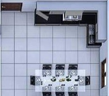

Fasilitas
Pilih bagian pada gambar untuk melihat keterangannya.
| Nama | Keterangan |
|---|---|
| Lemari dapur | Digunakan untuk menyimpan bahan makanan dan peralatan memasak. |
| Meja makan | Tempat untuk menyajikan dan menyantap makanan. |
| Pintu dapur | Akses untuk masuk dan keluar dari dapur. |
| Jendela | Membantu sirkulasi udara dan pencahayaan alami. |